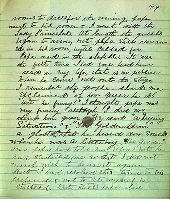
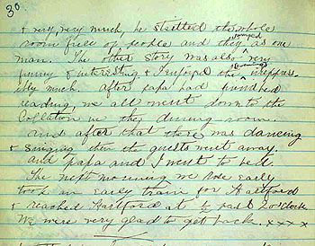

){kind=link}
){kind=link}

Susy Reviews Her Father's Performance Here is Susy Clemens' report of (as she puts it) "the first time I ever heard [Papa] read in my life, that is in public." It's from one of the Barrett Collection's most moving Twain items: the "biography" of her famous father that Susy began writing in the spring of 1885, when she was thirteen. This excerpt describes the benefit reading MT gave at Vassar College on 1 May 1885. Father and daughter travelled as a pair by train from Hartford, stopping on the way to visit General Grant. I've omitted Susy's account of that visit, and what she says about their reception at Vassar by the "Lady Principal" to focus on her response to her father's art as a story-teller. The sentence at the top of the page begins: "After supper [with the faculty and students] the young ladies went to their . . ." (If you're having trouble reading her account as it appears here, clicking on the pages will take you to larger, more legible versions of the same images.) It's interesting to note how uncomfortable Susy already was with the ghost story MT told the college women. "The Golden Arm" was probably his favorite performance piece, but Suzy came to hate it. When he visited her at Bryn Mawr six years later, her pride in her famous father didn't keep her from begging him not to include the ghost story in his performance for her classmates. He promised not to, but wound up telling the story anyway. As soon as he began it, Susy ran out of the hall, crying.  The corrections you can see on Susy's pages were made by her father. After Susy's death in 1896, MT thought several times about publishing her unfinished biography, silently edited and elaborated with commentary by himself. One set of his notes (written in 1901) is also in the Barrett Collection. In 1906 he went back to Susy's ms. and made it the subject of several of the dictations he was doing for his autobiography. Charles Neider includes those comments in the edition of Susy's Papa he published in 1985, one hundred years after Susy began it. From Neider's edition is taken the following, MT's own gloss on the evening at Vassar. MT's account remembers vividly his own discomfiture, but overlooks his daughter's: "How charitably she treats that ghastly experience! It is a dear and lovely disposition, and a most valuable one, that can brush away indignities and discourtesies and seek and find the pleasanter features of an experience. Susy had that disposition, and it was one of the jewels of her character that had come to her straight from her mother. It is a feature that was left out of me at birth. And, at seventy, I have not yet acquired it. I did not go to Vassar College professionally, but as a guest -- as a guest, and gratis. Aunt Clara (now Mrs. John B. Stanchfield) was a graduate of Vassar and it was to please her that I inflicted that journey upon Susy and myself. The invitation had come to me from both the lady mentioned by Susy and the President of the College -- a sour old saint who has probably been gathered to his fathers long ago, and I hope they enjoy him; I hope they value his society. I think I can get along without it, in either end of the next world. "We arrived at the College in that soaking rain, and Susy has described, with just a suggestion of dissatisfaction, the sort of reception we got. Susy had to sit in her damp clothes half an hour while we waited in the parlor; then she was taken to a fireless room and left to wait there again, as she has stated. I do not remember that President's name, and I am sorry. He did not put in an appearance until it was time for me to step upon the platform in front of that great garden of young and lovely blossoms. He caught up with me and advanced upon the platform with me and was going to introduce me. I said in substance: "'You have allowed me to get along without your help thus far, and if you will retire from the platform I will try to do the rest without it.' "I did not see him any more, but I detest his memory. Of course my resentment did not extend to the students, and so I had an unforgettable good time talking to them. And I think they had a good time too, for they responded 'as one man,' to use Susy's unimprovable phrase." |